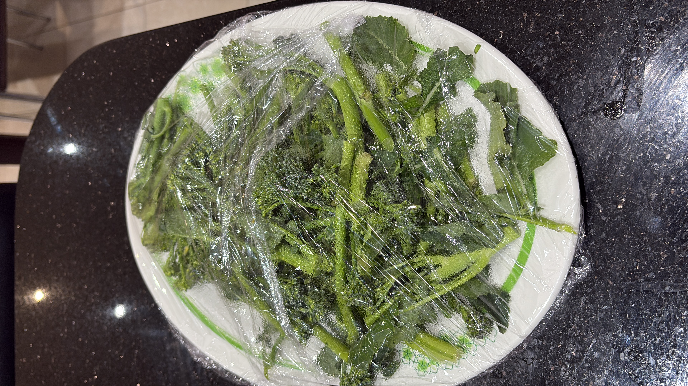

Home
Tenderstem Broccoli

Description
The perfect greens to pair with almost any meal!
Ingredients
- Tenderstem Broccoli
- Honey
- Chilli flakes
- Salt and Pepper
Steps
-
Wash and cut your Broccoli; separating the stalk and the
florets. This is important, as the stalk takes longer to cook.
- To a pan at medium heat, add a little bit of oil.
-
Add your Broccoli alongside a table spoon or two of water, then
cover with a lid. Let the Broccoli stem. This should take around
3 minutes for the florets, and around 6 minutes for the stalk.
-
Remove the lid, lower the heat, and make sure to drain any
excess liquid.
- Season to taste with honey, chilli, salt and pepper!